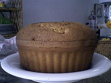
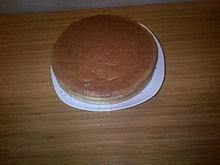

Bizcochuelo
El bizcocho, bizcochuelo o queque es un tipo de masa esponjosa
empleada en repostería. Sus ingredientes básicos son la harina
(generalmente de trigo), los huevos enteros, la mantequilla o
algún tipo de aceite o grasa, el azúcar y una pizca de sal.
Características

El bizcocho más sencillo contiene los cuatro ingredientes básicos
en proporciones idénticas, lo que lo asemeja a un pound cake. La
grasa es generalmente mantequilla, aunque puede ser también manteca
de cerdo o margarina y más raramente aceite de oliva. La levadura
química se suele añadir para gasificar y, por tanto, darle volumen
(si bien montando las claras a punto de nieve se consigue lo mismo).
El bizcocho admite líquidos en pequeñas cantidades (sobre todo leche,
pero también algún licor). En efecto, constituye la base de la
elaboración del llamado pastel tres leches.
Los demás ingredientes sirven para aromatizar y darle su sabor distintivo,
como ralladura de limón, almendra molida, cacao, coco rallado, etcétera.
No todas las masas dulces horneadas que crecen por acción de levaduras
(bollos, roscones de Reyes, panettone, etc.) se consideran bizcochos.
Tipos de bizcochos

Un bizcocho se suele hornear entre 180 y 200 °C hasta que esté bien cocido,
el tiempo de cocción depende del grueso de la masa.
Los bizcochos no necesitan siempre el empleo de harina leudante ni levaduras
químicas, ya que el batido de los huevos junto con el azúcar, realizan el sostén
y posterior levado en el horno.
Estirado en una fina capa obtenemos una genovesa, una variante de bizcocho que,
untada con un relleno cremoso, es la base de un tipo de pastel renombrado en
muchos países, como el brazo de gitano español.
Después de hornearlo, el bizcocho admite ser saturado de líquido sin perder
su consistencia. Empapado en almíbar, ron u otro licor, da lugar a pasteles
como el babà napolitano o el pionono de Granada. Empapado en una mezcla de crema
de leche, leche evaporada y leche condensada da lugar al pastel tres leches,
famoso en algunos países de América Latina.